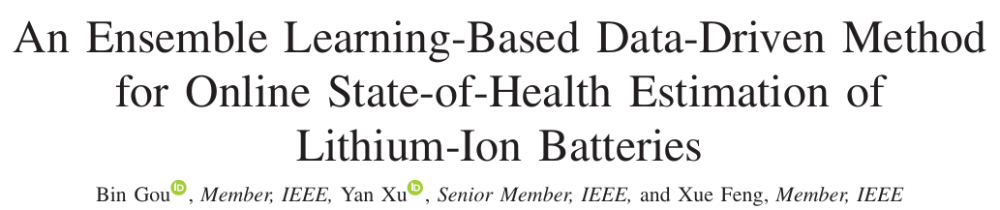

Pearson 상관 분석에 대하여
2025-11-07에 진행되었었던 배터리 미팅 이후, 추가적인 학습 자료에 대한 포스트입니다.
1. 서론

An Ensemble Learning-Based Data-Driven Method
for Online State-of-Health Estimation of Lithium-Ion Batteries
위 논문에서 등장하는 Pearson 상관 계수 기법에 대해 추가적으로 조사해보았습니다.
논문에서 피어슨 상관 계수 기법이 등장하는 부분은 논문에서
III. HEALTH INDICATOR EXTRACTION AND EVALUATION 속,
C. Health Indicator Selection 부분에서 등장합니다.
C. Health Indicator Selection
Although the DSCVR can describe the aging trend of the battery, DSCVRs with different voltage ranges, namely differ ent pairs of Vmax and Vmin, may describe different aging trends. In other words, the DSCVR and battery SOH are correlated. For data-driven learning models, a highly correlative feature could result in higher output accuracy. In light of this, Pearson correlation analysis [28] is used in this article to quantitatively evaluate the relationship between different DSCVR values and the practical SOH to select the most correlative health indicator. The Pearson correlation coefficient is calculated as...
해당 섹션에서 등장하는 피어슨 상관 계수을 추가적으로 조사해본 결과를 작성하도록 하겠습니다.
2. 피어슨 상관 계수(Pearson correlation coefficient)
피어슨 상관 계수, Pearson correlation coefficient에 대해서 먼저 알아보도록 하겠습니다.
피어슨 상관 계수이란, 통계학에서, 아래처럼 정의됩니다.
두 변수(X, Y)간의 선형 관계가 얼마나 강력한지, 그리고 그 관계의 방향이 어떠한지를 측정하는 방법.
피어슨 상관계수의 수식
피어슨 상관계수의 수식은 아래와 같습니다.
$$r = \frac{ \sum_{i=1}^{n}(x_i - \bar{x})(y_i - \bar{y}) }{ \sqrt{ \sum_{i=1}^{n}(x_i - \bar{x})^2 \sum_{i=1}^{n}(y_i - \bar{y})^2 } } $$수식에서 사용되는 변수들은 아래와 같습니다.
| 변수 이름 | 변수 설명 |
|---|---|
| $r$ | 피어슨 상관 계수(구하려는 최종 값) |
| $n$ | 데이터 쌍의 총 개수 (총 사이클 수) |
| $x_i$ | $i$번째 사이클에서의 X 변수의 값, 위 논문에서는 DSCVR 값 |
| $y_i$ | $i$번째 사이클에서의 Y 변수의 값, 위 논문에서는 실제 SOH(%) 값 |
| $\bar{x}$ | 모든 $x_i$(DSCVR)의 평균 |
| $\bar{y}$ | 모든 $y_i$(SOH)의 평균 |
피어슨 상관 계수의 결과값
피어슨 상관 계수의 결과값은 언제나 +1, -1 사이의 값을 가집니다.따라서, 피어슨 상관 계수의 결과값은, 아래와 같이 해석될 수 있습니다.
- 양의 값과 가까워질수록, 양의 선형 관계를 가집니다.
따라서, X변수가 증가하면, Y변수도 같이 증가합니다.
- 음의 값과 가까워질수록, 두 변수는 음의 선형 관계를 갖고 있습니다.
따라서, X변수가 증가하면, Y변수는 값이 감소합니다.
- 0과 가깝다면, 두 변수는 서로 상관 관계가 없다는 것을 알 수 있습니다.
따라서, X변수가 증가하든말든, Y변수는 자기 갈길을 갑니다.
상관 계수의 값에 대한 시각화 자료입니다.
3. 피어슨 상관 계수 쉽게 이해해보기
수식과 정의만 봐서는 이게 무슨 말을 하는건지 알기 매우 힘듬니다.
따라서, 이번에는 피어슨 상관 계수를 쉽게 이해해보는 하나의 예시를 들어 설명을 진행해보겠습니다.
1. 간단한 정의
피어슨 상관 계수는 간단하게 말해서, 두 변수가 얼마나 일관되게 움직이는가? 를 나타내는 값입니다.
그렇기 때문에, 두 변수 $x, y$가 얼마나 움직였는가를 확인하면, 피어슨 상관 계수를 이해하기가 편합니다.
2. 두 변수의 위치를 파악하기 (편차 계산)
$x, y$ 두 변수의 위치를 파악해보겠습니다.
수식에서 각자의 위치는 아래 단계로 파악할 수 있습니다.
- ($x_i - \bar{x}$) = DSCVR값(x)의 위치에서 x 변수의 기준점(평균)을 뺍니다.
- ($y_i - \bar{y}$) = SOH값(y)의 위치에서 y 변수의 기준점(평균)을 뺍니다.
위 두 수식을 계산하여, DSCVR과 SOH가 각자 자신의 기준점으로부터
플러스(+, 양)이나 마이너스(-, 음)의 방향으로 얼마나 떨어져있는지 파악할 수 있습니다.
3. 두 변수가 같은 방향으로 움직이나 판단 (공분산)(분자 수식 계산)
이 과정이 바로 핵심입니다. 두 변수 (x, y)의 각각의 편차를 곱합니다.
두 친구의 편차를 곱하면, 아래와 같이 세가지 Case로 구분될 수 있습니다.
- Case 1. (양수) $\times$ (양수) 즉, DSCVR이 평균보다 높고, SOH도 평균보다 높다면?
- Case 2. (음수) $\times$ (음수) 즉, DSCVR이 평균보다 낮고, SOH도 평균보다 낮다면?
- Case 1. (오타 수정: Case 3) (양수) $\times$ (음수) 즉, DSCVR이 평균보다 높고, SOH도 평균보다 낮다면?
두 수의 곱은 양수가 나옵니다. -> 둘이 같은 방향으로 움직입니다.
두 수의 곱은 양수가 나옵니다. -> 둘이 같은 방향으로 움직입니다.
두 수의 곱은 음수가 나옵니다. -> 둘이 다른 방향으로 움직입니다.
이후에는, 각 사이클($i$) 마다의 두 편차들의 곱에 대한 값들을 모두 더합니다.
$$\sum_{i=1}^{n}(x_i - \bar{x})(y_i - \bar{y})$$
1부터 $n$까지의 모든 데이터들(사이클) 에서의 두 편차들의 값들을 모두 더한다고 해석할 수 있습니다.
만약, 두 편차가 항상 같은 방향으로 움직여, 두 편차의 곱이 양수가 되었다면, 모든 곱셈 값에 대한 합산은 엄청 큰 양수가 됩니다.
4. 두 편차의 총 변동폭 계산(분모 수식 계산)
분모는, 두 변수가 얼마나 많이 움직였는가, 즉 각자의 총 변동량을 의미합니다.
- $\sqrt{ \sum_{i=1}^{n}(x_i - \bar{x})^2}$ = DSCVR 값의 총 변동량 ($x$의 표준 편차)
- $\sqrt{ \sum_{i=1}^{n}(y_i - \bar{y})^2}$ = SOH 값의 총 변동량 ($y$의 표준 편차)
3번 단계에서의 계산과는 달리, 4번 분모의 경우, 각자의 총 변동량의 합계를 마지막에 곱하였다는 과정을 확인할 수 있습니다.
5. 관계의 순도 계산(최종 값 $r$)
마지막으로, 분자 분모의 계산 결과를 통해, 최종적인 $r$ 값을 산출해냅니다.
이 나누기 과정을 "정규화" 라고 이야기 합니다.
정규화란, 두 변수가 각자 움직인 총 변동량 중에서,
두 변수가 함께 움직인 변동량이 차지하는 비율을 계산하는 과정입니다.
변동량의 값($r$)의 값이 양수가 된다면, 두 변수가 함께 움직이기 때문에,
두 변수는 서로 양의 선형 관계를 가지고 있는 것이고,
반대로, 값이 음수가 된다면, 두 변수가 다르게 움직이기 때문에,
두 변수는 서로 음의 선형 관계를 갖고 있다 판단할 수 있습니다.
만약, 상관계수의 값이 0이나 0과 가깝다면?
두 변수는 서로 선형 관계가 없다고 판단할 수 있습니다.

상관관계에 대해 알기 쉽게 제작된 그래프 시각화 자료입니다.
4. 논문에서의 피어슨 상관 계수 활용 방법
문제 상황
해당 논문에서, 피어슨 상관 계수는 가장 좋은 건강 지표(Health Indicator)로 선별하기 위한 핵심 도구로서 사용되었습니다.
본 논문에서는, 리튬이온배터리의 건강을 체크할 새로운 건강 지표로서 DSCVR을 제안하였습니다.
This phenomenon indicates that the DSCVR can describe the aging trend and can be used as a health indicator to measure the SOH degradation.
이 현상은 DSCVR이 노화 추세를 설명할 수 있으며, SOH 저하를 측정하는 건강 지표로 사용될 수 있음을 나타냅니다.
논문 Pg.4 / III. HEALTH INDICATOR EXTRACTION AND EVALUATION,
B. Feature Extraction and Evaluation 에서 발췌함.
논문에서 새롭게 제시한 DSCVR은 동일 전압 구간에서 충전에 걸리는 시간으로 정의하였습니다.
수식은 위와 같이 정의됩니다.
최대 전압($V_{max}$)까지 충전 단계에서 걸린 시간($tv_{max}$)에서 최소 전압($V_{min}$)까지 걸린 시간($tv_{min}$)을 뺀 값으로
DSCVR 값을 선정합니다.
다만, 수식에서 볼 수 있듯이, DSCVR 값을 계산하는데 사용되는 최대, 최소 전압에 대한 값을 여러 개 넣을 수 있다는 것을 볼 수 있습니다.
너무 많은 경우의 수 중에서, 연구진들은, 어떤 최대, 최소 전압을 사용해야 할지 고민했습니다.
분석 과정
연구진은, 건강 지표로 삼기 가장 적합한 DSCVR값을 측정하기 위한 전압 값들을 구하기 위해
위에서 설명한 피어슨 상관 계수 기법을 사용합니다.
$x$ 변수를 각각의 최대 전압과 최소 전압을 설정한 DSCVR 값으로,
$y$ 변수를 실제 SOH 값으로 설정하였습니다.
그리고, 이 두 변수 사이의 상관 관계를 계산하여, 표 I, II, III, IV에 정리하였습니다.
결과
정리된 표들을 살펴보면, $DSCVR(3.7V, 4.2V)$로 설정한 값이 모든 배터리에서 0.9989와 같이
가장 높은 $r$ 값을 보이고 있다는 것을 확인할 수 있습니다.
최종적으로는, 가장 높은 상위 4개의 $DSCVR()$ 조합을 사용하여, ELM 모델에 입력값으로 사용한다고 논문에서 이야기 해주고 있습니다.